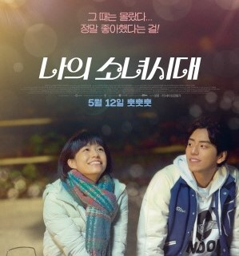
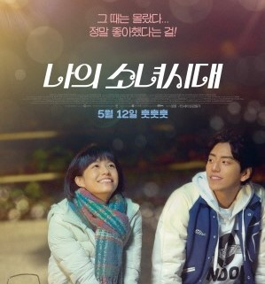

midnight sun (미드나잇 선)
XP라는 희귀병으로 태앙을 피해아만 하는 케이티. 오직 밤에만 외출을 허락된그녀에게는 어머니가 남겨준 기타와 창문 너머로 10년째 '찰리'세상의 빛이다. 어느 날 작은 기차역에서 함밤의 버스킹을 하던'케이티'의 앞에'찰리'가 나타나고, 두 사람은 매일 밤마다 모두가 부러워하는 완벽한 데이트를 이어간다. 처음으로 함께 여행을 떠난 날, 꿈 같은 시간을 보내던 '케이티'는, 그만 지켜야만 하는 규칙을 어기게 되고 결국 피할 수 없는 선택을 해야만 하는데...너에게 하고 싶은 진짜 사랑 고백 태앙이 뜬 뒤에 내 곁에 있어줄래?
너의 이름은
아직 만난 적 없는 너를, 찾고 있어 천년 만에 다가오는 혜성 기적이 시작된다 도쿄에 사는 소년 ‘타키’와 시골에 사는 소녀 ‘미츠하’는 서로의 몸이 뒤바뀌는 신기한 꿈을 꾼다 낯선 가족, 낯선 친구들, 낯선 풍경들... 반복되는 꿈과 흘러가는 시간 속, 마침내 깨닫는다 우리, 서로 뒤바뀐 절대 만날 리 없는 두 사람 반드시 만나야 하는 운명이 되다 서로에게 남긴 메모를 확인하며 점점 친구가 되어가는 ‘타키’와 ‘미츠하’ 언제부턴가 더 이상 몸이 바뀌지 않자 자신들이 특별하게 이어져있었음을 깨달은 ‘타키’는 ‘미츠하’를 만나러 가는데... 잊고 싶지 않은 사람 잊으면 안 되는 사람 너의 이름은?
나의 소녀시대